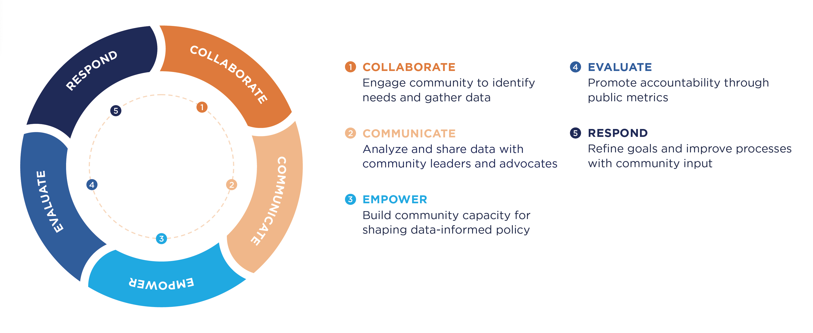

About
Community-Centered Analysis
Community-Centered Analysis centers on community-driven partnerships to provide advocates, as well as civic and private sector leaders, with data and metrics, contextualized analysis, interactive maps and data visualizations, and narrative storytelling as a resource in pursuit of a more just region.
Following the UVA Center for Community Partnerships’s commitment to authentic partnership and shared power, we work with community members, rather than for. Through deep engagement with impacted communities, we gather insights and information to accurately measure and articulate various forms of disparity in the region with an eye toward institutional accountability.
Guided by principles of justice, openness, accessibility, and reproducibility, these projects highlight critical assets in our region and underscore opportunities for collective action toward institutional and systemic change.
A Community-Driven Process
Learn more about our work at the UVA Center for Community Partnerships